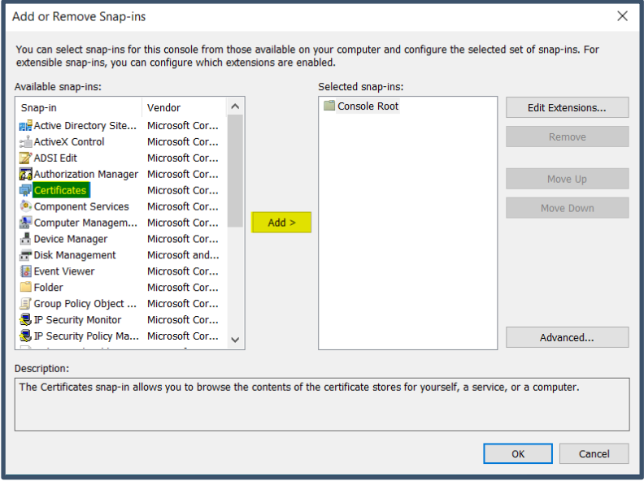
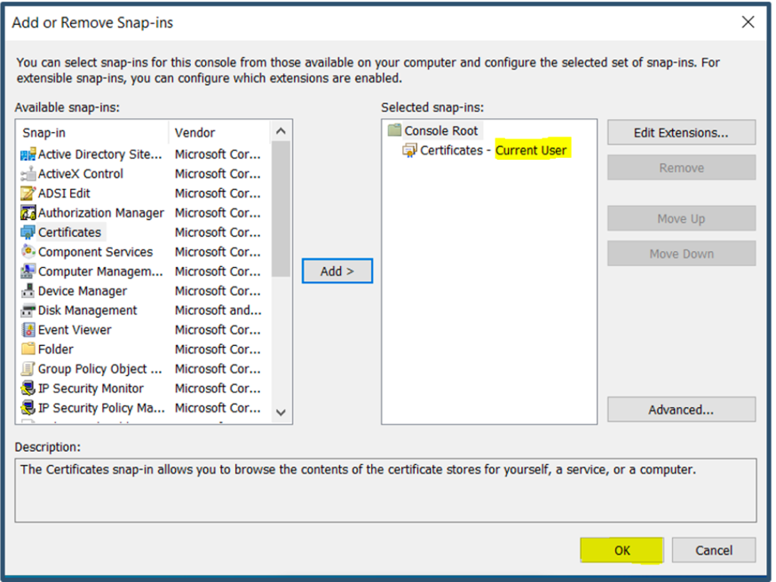
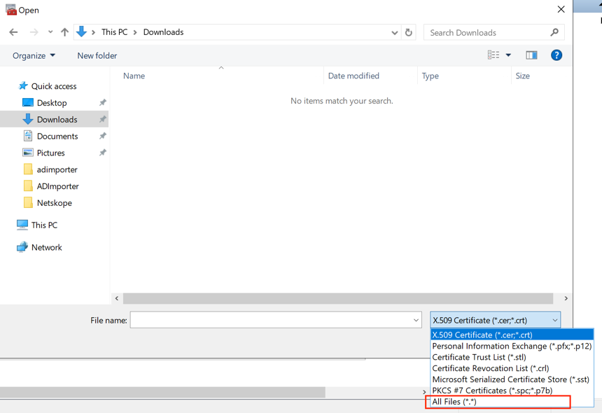
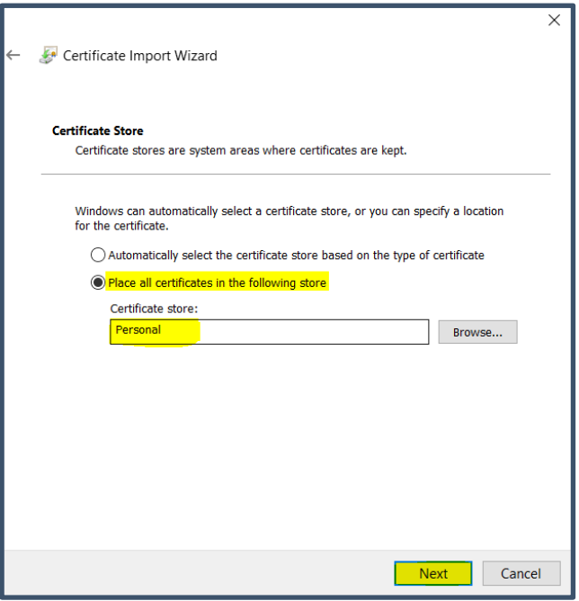
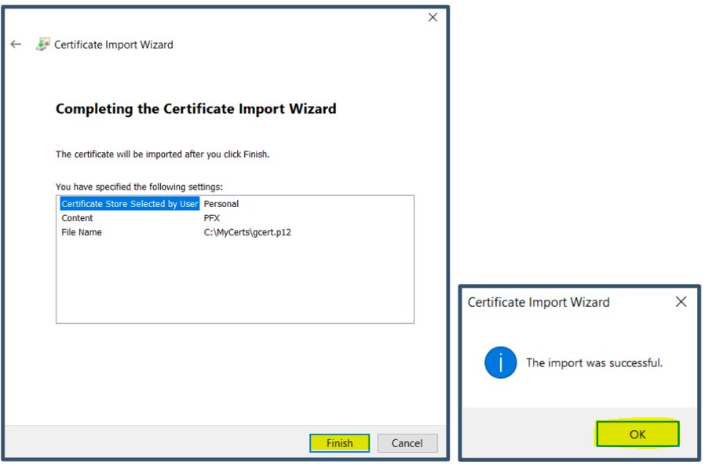

Import JumpCloud LDAP Server Certificate into Windows
The Netskope Directory Importer requires the JumpCloud LDAP certificate to be installed on the Windows User certificate store for authentication to JumpCloud LDAP Directory service.
Log in with admin credentials to the Windows device where the Netskope Directory Importer will be installed. For this purpose, a local admin account is being used (e.g.
localadmin).Launch
mmc.exeand select Add/Remove-Snapin from the File dropdown.
Select Certificates and click Add.
 Select My User Account and click Finish.

Select OK.
 Go to Certificates – Current User, right-click Personal, and then select All Tasks > Import.

Current User will be pre-selected. Click Next.
Click Browse and select the JumpCloud LDAP Server Certificate (Select All Files in the Dropdown to view the certificate) and click Next.
 Select Place all certificates in the following store > Personal and click Next.
 Click Finish and click OK.
 The JumpCloud Certificate will be displayed under Personal > Certificates.

You can close the console at this time. Click No when prompted with the option to save console settings.